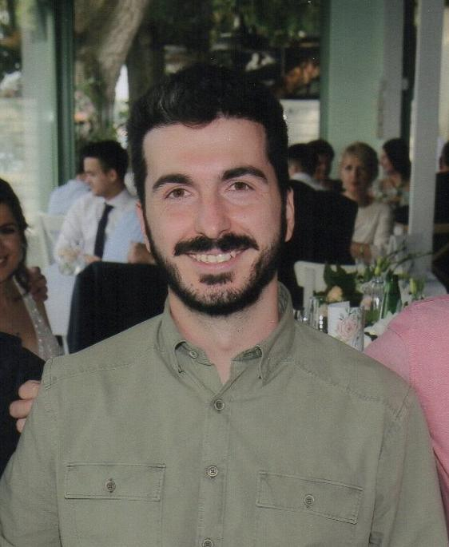

Dr Relja Arandjelović (Др Реља Аранђеловић)

I am a Staff Research Scientist at Google DeepMind.
Previously I was a Postdoctoral research assistant at the WILLOW group (INRIA / École Normale Superiéure), working with Josef Sivic,
and a Postdoctoral research assistant at the
Visual Geometry Group, Department of Engineering Science, University of Oxford, working with Prof. Andrew Zisserman. I obtained a PhD in Engineering from the same group in 2013. Before coming to Oxford I studied at Cambridge where I got my BA and MEng degrees.
News 
-
21 Sep 2023
Paper accepted to NeurIPS 2023: Towards in-context scene understanding -
24 Mar 2023
New paper on arXiv: Towards in-context scene understanding -
16 May 2023
Outstanding Reviewer award at the CVPR 2023 -
24 Mar 2023
New paper on arXiv: Three ways to improve feature alignment for open vocabulary detection -
30 Sep 2022
New paper on arXiv: Where should I spend my FLOPS? Efficiency evaluations of visual pre-training methods -
08 Jul 2022
Paper accepted to ECCV 2022: Object discovery and representation networks -
04 Apr 2022
Ignacio Rocco, ex PhD student I coadvised with Josef Sivic, won the AFRIF (French association for pattern recognition) 2021 PhD Thesis Prize for his thesis "Neural architectures for estimating correspondences between images":
Prize and thesis -
17 Mar 2022
New paper on arXiv: Object discovery and representation networks -
02 Mar 2022
Paper accepted to CVPR 2022: Input-level Inductive Biases for 3D Reconstruction -
23 Feb 2022
New paper on arXiv: Hierarchical Perceiver